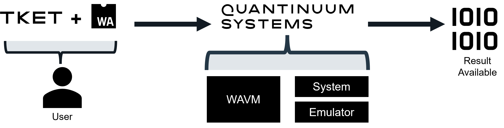
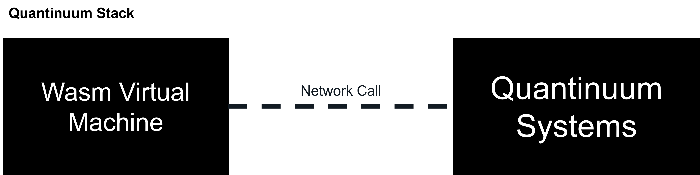
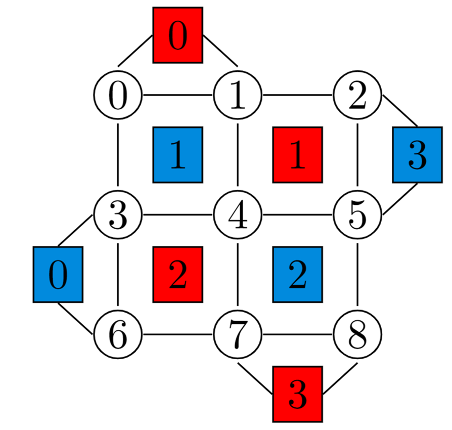

QEC Decoder Toolkit¶
Quantinuum offers a real-time hybrid compute capability for Quantum Error Correction (QEC) workflows. This capability executes Web Assembly (Wasm) in the Quantinuum stack and enables use of libraries (e.g. linear algebra and graph algorithms) and complex datastructures (e.g. vectors and graphs) during real-time execution of a quantum circuit. This environment is hereby referred to as WebAssembly Virtual Machine (WAVM). Unlocking experimentation of basic QEC workflows is an important milestone, as Quantinuum plans to upgrade its systems and deploy practical QEC protocols at scale. The QEC workflow presented here has been used in the following quantum error correction results: [arxiv.2208.01863, arxiv.2305.03828].
Wasm is an industry standard for sandboxed computing. To compile Wasm binaries, a low-level programming language, such as Rust or C, are used to compose desired classical functions before compilation. The quantum computing workflow will then contain a call to Wasm. Wasm is used because it is fast, safe, expressive, and easy to compile with familiar programming languages. Measurement results are processed on WAVM, where a decoding algorithm is used to determine recovery operations and update quantum circuits in real-time. Once generated, the Wasm binary can be injected into a TKET workflow. “Async” Wasm calls involve execution of a void (no output) Wasm function during the TKET circuit execution. The Wasm result is polled until a non-void (one integer output) Wasm function is used to access the Wasm result. This is an important feature that helps reduce qubit idling time and ultimately minimizes the impact of memory error in TKET + Wasm programs.
{kind=link}
This article is presented in two sections. The first section, WebAssembly in the Quantinuum Stack, discusses steps to generate a Wasm compilation project using Rust or C. In addition, guidance is presented on using Wasm with TKET and use cases that may lead to job failure. The second section presents two QEC use cases and one repeat-until-success demonstration. The Mid-circuit Measurement and Reset (MCMR) and Qubit Reuse features are used in the QEC use cases, which is also showcased here: Mid-Circuit Measurement. An explanation of the Quantinuum submission workflow is found here: Job Submissions. The Wasm module is imported from TKET alongside several optional conditional operators. More information on the conditional operations available can be found in the TKET user manual (Classical and Conditional Operations).
WebAssembly in the Quantinuum Stack¶
Wasm is an industry standard for sandboxed computing. It offers efficient execution of classical programs and Just-in-Time (JIT) from Wasm to x64/ arm64 is extremely efficient. A WebAssembly Virtual Machine (WAVM) requires as little as tens of microseconds to start or shutdown. Wasm can be generated by composing Rust and C code, followed by a compilation step with the Rust compiler or LLVM toolchain (Clang compiler). Once generated, the Wasm binary can be injected into the TKET workflow. The main benefit is to enable classical compute in the Quantinuum stack during real-time execution of the quantum circuit.
The primary purpose of WAVM is to provide a real-time classical compute environment for QEC decoding. Wasm programs that are submitted to Quantinuum usually contain functions accepting integer arguments (measurement results as binary outcomes converted to decimal) and functions returning integer values that map to a conditional prescribed action to correct for errors in QEC programs. These functions can be computationally complex (NP-Complete). Usually, the function attempts to determine the most likely error or errors based on the inputted measurement results. Conditionally prescribed actions are applied once the Wasm processing on the measurement result is complete. These actions are usually fixed-angle 1-qubit operations, such as Pauli-\(\hat{X}\), Pauli-\(\hat{Y}\) or Pauli-\(\hat{Z}\), and need to be compiled into a Quantinuum consumable gate with TKET.
{kind=link}
The end user is responsible for generating a Wasm binary from a source file (usually written in C or Rust) and a TKET circuit with operations defined in the Wasm binary. Both the TKET circuit and the Wasm binary are submitted to Quantinuum Systems. The Wasm binary is loaded into WAVM, co-located with Quantinuum Systems. The TKET circuit is executed on hardware. For Wasm operations on the TKET circuit, network calls are made to WAVM to execute the Wasm binary. “Asynchronous” (async) Wasm calls involve execution of a void (no output) Wasm function during the TKET circuit execution. The Wasm result is polled until a non-void (one integer output) Wasm function is used to access the Wasm result.
Wasm Lifecyle¶
Decoders must be implemented in low langauges and compiled to Wasm binaries. The Wasm program lifecycle is shown below.
{kind=link}
The following subsections will go over:
Installation of Rust and C
Project Setup
Unit Testing Wasm and C
Compilation from Rust or C to Wasm
It is recommended to use either Rust or C for the compilation language to Wasm. The languages have functionality that easily compiles to Wasm. For other language options see Wasm Getting Started Developer’s page.
{kind=link}
The following software is required to define and test decoders, and to compile Wasm binaries.
CMake v3.13
Clang v17.0.3
Cargo v1.77.2
Installation¶
Install Rust using the Rust Installer.
Windows Users: Before running the installer, you’ll need to install the Microsoft Build Tools.
If you’re new to Rust, see the The Rust Programming Language book. Note that Cargo is the Rust package manager. For more info on Cargo, see The Cargo Book.
If using Visual Studio code, you can also install the rust-analyzer extension in the Extensions tab.
For Windows 10/11 users, instruction should be followed here to install clang.
For Ubuntu 20.04 users, the development tools group needs to be installed with Aptitude. The LLVM and Clang compilers need to be installed separately.sudo apt-get install build-essential
sudo apt-get install clang
sudo apt install lld-14
MacOS users must install XCode command line tools to enable clang usage.xcode-select –install
LLVM is also available via HomeBrew.
CMake also needs to be installed to invoke the C compilation. Windows users can use the Visual Studio installer. CMake is available through both Ubuntu and macOS (brew). Downloads for CMake are here.
Project Setup¶
- Run the following command to create a new rust project called project. The project name can be modified by the user.
cargo new --lib project
This creates a new library in a subdirectory with the project name you used with the required files.- The src/lib.rs file will contain user-defined functions that will be compiled into Wasm.
- Inside this subdirectory is a file called cargo.toml. This file will be used to configure rust compilation procedure to generate Wasm.
- Navigate to your Rust project directory from the command line.
- Run:
cargo build.- If successful, a target folder and cargo.lock file will be created, alongside the output of the command displaying Finished.
- If failed, Cargo will output a messaging related to the reason.
- Run:
rustup target add wasm32-unknown-unknown
This allows Rust to used Wasm as a compilation target. This only needs to be run once.
Create a project directory: mkdir project. The project directory should contain the following subdirectories and files:
- src directory containing *.c source files containing user-defined functions.
- tests containing *.cc files testing the *.c files in src with the GoogleTests framework. The tests directory also contains a CMakeFiles.txt to build the gtest executable.
Function Implementation¶
Examples of the types of functions that can be put in Rust source code are provided in the respective folders within each of the example folders. Define the classical functions you plan to use in your hybrid compute program. These will be the classical functions that your quantum program will run during execution. In Rust, edit the src/lib.rs file.#[no_mangle]: Ensures the function name isn’t changed by Rust’s name mangling, making it accessible from other languages or tools.
Examples of the types of functions that can be put in C source code are provided in the respective folders within each of the example folders. Define the classical functions you plan to use in your hybrid compute program. These will be the classical functions that your quantum program will run during execution. For C, edit the src/lib.c file. The standard C library cannot be used in a program that is intended to be compiled to Wasm.
Unit Tests¶
The Cargo Tests module can be used to test the rust source link. Instructions on writing tests can be found here. All tests are defined under the code block with the annotation #[cfg(test)]. This tells the cargo to only run tests when the following command is used: cargo test. Also that annotation prevents the test being included in the compiled Wasm binary
The test module’s parent’s items are brought into scope within the test code-block with use super::*. Within the code-block annotated by #[cfg(test)], each unit test is annotated with #[test].
For each rust project, first navigating into to the same level as the cargo.toml file, and then running, cargo test will run all the tests to verify correctness of the rust source code.
Each C directory contains a CMakeLists.txt and a test_lib.cc file. These file use GoogleTest to unit test the methods defined in src/lib.c. GoogleTest cannot be used with the MSCV clang compiler on Windows 10/ 11. Mingw32 clang or the MSVC toolchain need to be specified instead. test_lib.cc contains an implementation for each test. Two header files are needed:
#include <gtest/gtest.h>#include “../src/lib.c”
TEST macro for writing tests. The following code defines an individual test named TestName in the test suite TestSuite.
TEST(TestSuite, TestName) {
// statements
}The following commands need to be called within the tests subdirectory:
- Generate MakeFiles using CMake and output in a new subdirectory called build:
cmake -S . -B build - Build the executables needed for testing src/lib.c
cmake –build build - change directory into the build directory and call the
ctestexecutable to run the unit tests.cd build && ctest
Wasm Compilation¶
Run: cargo build –release –target wasm32-unknown-unknown. This compiles your Rust code to Wasm. The Wasm binary can be found in the ./target/wasm32-unknown-unknown/release/ directory.
Adding #![no_std] into src/lib.rs will disable the use of the standard library when compiling to Wasm.
The C compilation uses the LLVM toolchain and requires that no standard headers be used within the program. The compilation can be invoked with the clang compiler with specific options to compile lib.c into a Wasm binary, lib.wasm:clang –target=wasm32 –no-standard-libraries -Wl,–no-entry -Wl,–export-all -o lib.wasm lib.c
The following compiler options are used upon Clang invocation:
–target=wasm32: Specify the target output as 32-bit Wasm binary.–no-standard-libraries: A compiler option to prevent usage of libc.-Wl,–no-entry: A linker option that disables the check for a main function in the c source.-Wl,–export-all:
The Wasm is generated in the directory specified when calling the clang compiler.
CMakeFiles.txt are also provided for each example. The CMake enables Wasm compilatin and automatically uses the compiler and linker flags when clang is invoked. CMake must be called in the root location of each project (at the same directory level as CMakeLists.txt).
For compilation on Windows with the MSVC clang toolchain:
cmake -G “Ninja” -B build -DCMAKE_TOOLCHAIN_FILE=wasm-toolchain.cmakeFor Linux and macOS:
cmake -G “Unix Makefiles” -B build -DCMAKE_TOOLCHAIN_FILE=wasm-toolchain.cmakeOnce the CMake configurations are built, the following command will trigger compilation of the Wasm binary:
cmake –build build
Injecting Wasm into TKET¶
To inject Wasm into a TKET program and enable processing on Quantinuum Systems or emulators, three components must be incorporated in the workflow.
tket:pytket.wasm.ModuleHandler: Links the Wasm module. Additionally, checks Wasm binary is compatible with Wasm standards (number of input parameters and input/ output parameter types).: Adds the linked Wasm to the TKET program as a classical operation to act across specified registers.
: Adds the linked Wasm to the TKET program as a classical operation to act on specific bits.
Wasm submission, visibility and monitoring with Nexus¶
qnexus provides a python module for wasm to enable submission of Wasm binaries to Quantinuum Systems. Users will be able to upload WasmModuleHandler instances with a unique name to a Nexus project, in addition to having visibility on the Wasm resource within the scope of a project. Wasm resources can be utilized via .
The QEC Decoder Toolkit project contains pytket.circuit.Circuit, pytket.wasm.WasmModuleHandler and pytket.backend.BackendResult resources. In addition there are properties corresponding to QEC code parameters (number of physical and logical qubits, and code distance) which provide end-users with visibility the aforementioned resources and the corresponding compile and execute jobs.
The code cell below retrieves the QEC Decoder Toolkit project from the Nexus server. If the project does not exist, a project is created and instantiated. The qnexus.QuantinuumConfig targets the Quantinuum emulator in the hardware stack, H1-1E.
import qnexus as qnx
import datetime
project = qnx.projects.get_or_create(
name="QEC Decoder Toolkit",
description="Collection of Circuit, Wasm binaries and BackendResult resources required for QEC workflows with real-time decoding."
)
qnx.context.set_active_project(project)
name_suffix = datetime.datetime.now().strftime("%Y-%m-%d_%H-%M-%S")
config = qnx.QuantinuumConfig(device_name="H1-1E")
If there properties assigned to the project, these can be obtained using . The df child method can be used to report property information as pandas DataFrame.
df_properties = qnx.projects.get_properties(
project
).df()
df_properties.filter(
["name", "description", "property_type"],
axis=1
)
df_properties.tail()
The code-cells below retrieves instances of pytket._tket.circuit.Circuit, pytket.wasm.WasmModuleHandler and pytket.backends.backendresult.BackendResult using a dictionary specifying both property names and corresponding values. In this scenario, the property-value dictionary specifies integers commonly used in QEC Codes (\([[9,1,3]]\)).
qec_code_property = {
"physical-qubits-2025-01-14_16-02-44": 9,
"logical-qubits-2025-01-14_16-02-44": 1,
"code-distance-2025-01-14_16-02-44": 3,
}
df_circuit = qnx.circuits.get_all(
properties=qec_code_property
).df()
df_circuit.drop(
["project", "description", "id", "created", "modified"],
axis=1,
inplace=True
)
df_circuit
df_wasm = qnx.wasm_modules.get_all(
properties=qec_code_property
).df()
df_wasm.drop(
["project", "description", "id", "modified"],
axis=1,
inplace=True
)
df_wasm
df_jobs = qnx.jobs.get_all(
properties=qec_code_property
).df().filter(
["name", "job_type", "last_status"],
axis=1,
)
df_jobs
import pandas as pd
ref_execute_job = qnx.jobs.get(name_like="execute-job-9_1_3-2025-01-14_16-02-44")
result = qnx.jobs.results(ref_execute_job)[0].download_result()
df_result = pd.DataFrame([["".join(map(str, b)), p] for b, p in result.get_distribution().items()], columns=["bitstring", "probability"])
df_result.head()
Estimating Program Size¶
The guidance provided by Quantinuum is to limit program size to 1.3 MBs. The hard limit on program size is 6 MBs, otherwise the job will fail. For real-time hybrid compute jobs involving both quantum circuits and Wasm binaries, the program size must be estimated using the methods defined below.
The estimate_wasm_size method accepts a bytes object to the Wasm binary on local disk. The os module is used to estimate the size of the Wasm binary in MBs.
import sys
def estimate_wasm_size(
wasm: bytes
) -> int:
r"""Returns the size of the inputted file in MBs.
:param wasm: Wasm module
:param_type: bytes
:returns: int
"""
return sys.getsizeof(wasm) / 1024**2
To estimate the size of a TKET circuit, the circuit_to_qasm_str must be used to convert the circuit into a qasm string. The sys module can be used to estimate the size of the of the QASM string in MBs.
import sys
from pytket.circuit import Circuit
from pytket.qasm import circuit_to_qasm_str
def estimate_circuit_size(
circuit: Circuit
) -> int:
qasm_str = circuit_to_qasm_str(circuit, header="hqslib1")
return sys.getsizeof(qasm_str) / 1024**2
Asynchronous Wasm¶
Asynchronous (async) Wasm can help minimize qubit idle-time. Async Wasm involves void calls during job execution and integer calls when quantum correction is required. The schematic below shows four circuit primitives: Initialization, 2 Syndrome Extraction blocks and Actions dependent on Wasm result. Void Wasm calls are non-blocking, they call a Wasm function without blocking execution of the quantum circuit. Each void call updates an in-memory Wasm variable. This can also be referred to as a Wasm register. Successive void calls update the value of the in-memory Wasm variable. when corrections are required, an integer Wasm function is called to write the in-memory Wasm variable to a classical register on the TKET circuit. The TKET classical register is then used to conditionally perform gate operations on the qubit registers. It is best practice to reset the in-memory Wasm variable on a per-shot basis. During implementation of decoder, the in-memory Wasm variables are defined as global variables in C or Rust source.
Note
In-memory Wasm variables are automatically reset on a per-chunk basis. Users are advised to reset on a per-shot basis by using a void Wasm call at the end of a circuit.
{kind=link}
Support¶
FAQS¶
Is this a library of blackbox QEC decoders?
No, this is a server-side capability that runs user-defined classical decoders during real-time execution of a quantum circuit. The user is responsible for defining decoders and their workflow.
Why is Wasm useful for my use case?
WebAssembly enables the execution of classical logic during the real-time execution of a quantum circuit. This is useful for QEC workflows with look-up and algorithmic decoders. The quantum circuit can apply Wasm on a specific classical register to perform processing on the register value. The output of the Wasm function can be stored in the same register, or passed to new register.
Why is this release relevant as Quantinuum upgrades its systems?
Practical QEC schemes require real-time hybrid computation. This new capability is the first step to achieving this on Quantinuum Systems.
Why can I not use a higher-level programming language, such as Julia?
There are two requirement: (1) the higher-level language is has support for Wasm compilation, and (2) the compiled Wasm must be fast and execute in ~2 milliseconds. This is best achieved with low-level languages like C and Rust. The main issue with Julia, Python, etc. is that they are either interpreted or have garbage collection. Neither is suitable for fast, deterministic execution within qubit coherence time.
Is it possible for me to submit arbitrary Wasm to Quantinuum Systems?
No, it is not possible to submit arbitrary Wasm to Quantinuum Systems. Each Wasm function must satisfy a Wasm standard. Each function is either a void function or a 32-bit integer function. For 32-bit integer Wasm function, the function must return only one 32-bit integer. The Wasm function can only accept (multiple) 32-bit integer arguments, or no arguments.
WAVM is an isolated memory-safe environment and communicates via network calls with Quantinuum Systems. This help alleviate the danger of end users submitting customized Wasm binaries.
How do I prevent qubits from idling and protect my program from memory error when using Wasm?
For Wasm calls during circuit execution, it is recommended to use async Wasm calls. This is the use of void Wasm call to process the value of a register and to store some desired value as an in-memory Wasm variable. After the circuit, or subcircuit, has completed execution, the in-memory Wasm variable is retrieved using an integer function and applied to the specified classical register. For in-memory Wasm variables, a Wasm call is required at the end of each shot to restore the in-memory Wasm variable to a null value.
Can I also use Wasm with the Quantinuum emulator?
Yes, Wasm is available for use on both the Quantinuum hardware and emulator.
Can I use parallelization in the WAVM?
No, parallelization on a single core and across multiple cores is not supported.
Troubleshooting¶
There are known issues that cause failure during execution of the submitted Wasm binary. These issues are detailed below with the cause of failure, potential resolutions and the error code/ message.
Wasm program timeout
Use Case: A user’s QASM program has many void Wasm calls (no output expected) eventually followed by a non-void Wasm call (one output expected).
Failure: If multiple void requests are made in a short interval and then a non-void request is made, the summation of execution time for all the voids + non-void could exceed the RTE timeout of 250ms. The RTE is waiting for a response from the non-void request. An error of type
Response 0: error: 0xFFFFFFE6 CCE receive timed out - file: rtexec.c line: xxxx, can send the system into maintenance mode without failing the job, requiring the job to be manually paused by operators.Resolution: Run the QASM on a simulator or try to determine the number of Wasm function calls from the QASM and adjust the order is possible.
Error Code: 3002
Error Message:
WASM error: WASM failed during run-time. Execution time of function '<function name>' exceeded maximum <timeout value> msec
Large Wasm binary with large number of exported functions.
Use Case: A user codes a source program to be converted to Wasm. Source could be any high-level language that supports Wasm output. The source program contains every possible Wasm function the user creates, whether or not used by a TKET program and marks all the functions to be exported. Any of the User’s TKET programs use this single Wasm binary.
Failure: If the time taken to load the large Wasm binary into memory exceeds a threshold, then a Wasm LOAD FAILURE will be reported. Loading Wasm into memory requires many steps, but the time consuming step is to compile each exported Wasm function. Note: The number of exported functions in a Wasm binary is not necessarily the cause of the LOAD timeout, but rather the time it takes to compile all exported functions. 1000 exported functions could compile within the timeout whereas 10 very large exported functions could exceed the timeout.
Resolution: Keep Wasm binaries to a small size with only the required Wasm functions needed for a particular TKET program.
Error Code: 3002
Error Message:
WASM error: WASM failed during binary load. <appended CCE message>A list of the possible “messages” that could be substituted in for
: Failed to load wasm binary to moduleWasm binary does not export function: <function name>No wasm functions are exportedFailed wasm_request for init()
WASM function causes WAVM Exception.
Use Case: A user codes a high level source program and converts to Wasm. A source function does memory management (alloc, free, etc). The program may not have been unit tested.
Failure: A Wasm function uses a pthread as opposed to a main thread. When this function is executed, it may pass the first time and then fail the next time. In these cases, the TKET+Wasm job is either Paused or Failed. This failure can be seen in two ways:
either a WAVM Exception is caught (e.g. Div/0);
SEGV (Segmentation Violation) occurs in the pthread executing the Wasm function.
Resolution: User must unit test their Wasm functions as much as possible. Quantinuum can also provide debugging by obtaining the TKET and Wasm from the submitted job. Note: C with pthreads have known issues with Exception handling when using 3rd party libraries (e.g. WAVM Lib). As from above, some WAVM Exceptions can be caught by the pthread while others are not, but the SEGV can be caught.
Error Code: 3002
Error Message:
WASM error: WASM failed during run-time. Execution time of function '<function name>' exceeded maximum <timeout value> msecA list of the possible WAVM exceptions that can be caught:
wavm.outOfBoundsMemoryAccesswavm.outOfBoundsTableAccesswavm.outOfBoundsDataSegmentAccesswavm.stackOverflowwavm.integerDivideByZeroOrOverflowwavm.invalidFloatOperationwavm.invokeSignatureMismatchwavm.reachedUnreachablewavm.indirectCallSignatureMismatchwavm.uninitializedTableElementwavm.calledAbortwavm.calledUnimplementedIntrinsicwavm.outOfMemorywavm.misalignedAtomicMemoryAccesswavm.waitOnUnsharedMemorywavm.invalidArgument
Use Cases¶
Three use cases are provided to demonstrate application of the QEC Decoder Toolkit via the real-time hybrid-compute environment. Each subdirectory contains the relevant source-code to unit test and compile Wasm binaries.
Repeat Until Success: Conditionally adding quantum operations to a circuit based on equality comparisons with an in-memory Wasm variable.
Repetition Code: \([[3, 1, 1]]\) code to encode 1 logical qubit into 3 physical qubits with code distance 1.
Surface Code: \([[9, 1, 3]]\) code to encode 1 logical qubit into 9 physical qubits with code distance 3.
Nexus Project¶
The following properties are defined with unique names. Each property corresponds to an integer in a QEC code. This will be used to label the \([[3, 1, 1]]\) and \([[9, 1, 3]]\) demonstrated on Quatinuum emulators.
qnx.projects.add_property(
name=f"physical-qubits-{name_suffix}",
property_type="int",
description="number of physical qubits used in encoding"
)
qnx.projects.add_property(
name=f"logical-qubits-{name_suffix}",
property_type="int",
description="number of logical qubits"
)
qnx.projects.add_property(
name=f"code-distance-{name_suffix}",
property_type="int",
description="distance of QEC code"
)
Repeat Until Success¶
This use case conditionally adds quantum operations to a circuit based on equality comparisons with an in-memory Wasm variable. Only integer Wasm calls are used. The C and Rust source, in addition to build scripts, can be found here.
A 2-qubit circuit is initialized. Subsequently, the add_c_register is used to add 4 classical registers. The first argument defines the name of the classical register. The second argument defines the size of the classical register. The following classical registers are added manually:
creg0with 1 bitcreg1with 1 bitcondwith 32 bitscountwith 32 bits
from pytket.circuit import Circuit, Qubit
from pytket.circuit.logic_exp import reg_lt
circuit = Circuit(2, name=f"RUS Circuit")
# Add classical registers
creg0 = circuit.add_c_register("creg0", 1)
creg1 = circuit.add_c_register("creg1", 1)
cond = circuit.add_c_register("cond", 32)
count = circuit.add_c_register("count", 32)
The pytket.wasm.WasmFileHandler instance is used to link to the Wasm module.
from pathlib import Path
from pytket.wasm import WasmModuleHandler
import qnexus as qnx
wasm_module = Path("repeat_until_success/c/rus.wasm").read_bytes()
wasm_module_handler = WasmModuleHandler(wasm_module)
wasm_module_handler.check()
for name, (n_input, n_output) in wasm_module_handler.functions.items():
print(f"function name: {name}")
print(f"n_input: {n_input}")
print(f"n_output: {n_output}\n")
The linked Wasm module is added to pytket.circuit.Circuit instance using add_wasm_to_reg. The Wasm method add_count is called and the bit registers creg1 and count are supplied. The output of add_count is written to cond. All the operations in this block are conditional operations on the decimal value of the bit register cond.
n_repetitions = 5
cond_execute = 3
for loop_iter in range(1, n_repetitions + 1):
circuit.H(0, condition=reg_lt(cond, cond_execute))
circuit.CX(0, 1, condition=reg_lt(cond, cond_execute))
circuit.Measure(Qubit(1), creg1[0], condition=reg_lt(cond, cond_execute))
# Call Wasm
circuit.add_wasm_to_reg(
"add_count", wasm_module_handler, [creg1, count], [cond], condition=reg_lt(cond, cond_execute)
)
circuit.add_c_setreg(loop_iter, count, condition=reg_lt(cond, cond_execute))
circuit.Reset(0, condition=reg_lt(cond, cond_execute))
circuit.Measure(Qubit(0), creg0[0])
circuit.Measure(Qubit(1), creg1[0])
Both the TKET circuit and the Wasm binary are uploaded to Nexus.
ref_circuit = qnx.circuits.upload(
name=f"RUS-circuit-{name_suffix}",
circuit=circuit
)
ref_wasm = qnx.wasm_modules.upload(
name=f"RUS-wasm-{name_suffix}",
wasm_module_handler=wasm_module_handler
)
The RUS circuit is compiled to the Quantinuum gate set.
ref_compile_job = qnx.start_compile_job(
name=f"rus-compile-job-{name_suffix}",
circuits=[ref_circuit],
optimisation_level=0,
backend_config=config
)
qnx.jobs.wait_for(ref_compile_job)
ref_compile_circuit = qnx.jobs.results(ref_compile_job)[0].get_output()
compiled_circuit = ref_compile_circuit.download_circuit()
from pytket.circuit.display import render_circuit_jupyter
render_circuit_jupyter(compiled_circuit)
The combined program size can be estimated below.
program_size = estimate_circuit_size(compiled_circuit) + estimate_wasm_size(wasm_module_handler.bytecode())
print(f"{program_size} MBs")
The RUS circuit is submitted to the Quantinuum emulator. The wasm_module keyword argument is used to specify the wasm binary to submit to the emulator.
ref_execute_job = qnx.start_execute_job(
name=f"rus-execute-job-{name_suffix}",
n_shots=[100],
backend_config=config,
circuits=[ref_compile_circuit],
wasm_module=ref_wasm
)
qnx.jobs.wait_for(ref_execute_job)
ref_result = qnx.jobs.results(ref_execute_job)[0]
result = ref_result.download_result()
distribution = result.get_counts(creg1)
logical_fidelity = distribution.get((0,)) / sum(distribution.values())
print(logical_fidelity)
Repetition Code¶
\([[3, 1, 1]]\) code to encode 1 logical qubit into 3 physical qubits with code distance 2. Integer Wasm calls are used to perform decoding via a look-up table. Void Wasm calls are not in this use case. The C and Rust source, in addition to the build scripts, can be found here.
First, the physical qubit register is initialized in the \(|000\rangle\) state encoding the logical \(|0\rangle\) state. One ancilla qubit is used to perform two syndrome measurements:
\(\hat{Z}_{q[0]} \hat{Z}_{q[1]} \hat{I}_{q[2]}\)
\(\hat{I}_{q[0]} \hat{Z}_{q[1]} \hat{Z}_{q[2]}\)
Subsequently, classically-conditioned operations are used to correct any errors on the physical qubits using the syndrome measurement results. Finally, direct measurements on the physical qubits are performed to verify the final state of the logical qubit is \(|0\rangle\). After each syndrome extraction, Wasm functions are used to determine which qubits are to be corrected.
properties_3_1_1 = {
f"physical-qubits-{name_suffix}": 3,
f"logical-qubits-{name_suffix}": 1,
f"code-distance-{name_suffix}": 1
}
from pathlib import Path
from pytket.wasm import WasmModuleHandler
wasm_file_path = Path().cwd().joinpath("repetition_code") / "c" / "repetition_code.wasm"
wasm_module_3_1_1 = WasmModuleHandler(wasm_file_path.read_bytes())
ref_wasm_3_1_1 = qnx.wasm_modules.upload(name="wasm_3_1_1", wasm_module_handler=wasm_module_3_1_1, properties=properties_3_1_1)
import pandas as pd
wasm_module_3_1_1.check()
df = pd.DataFrame([[fn,i,o] for fn, (i, o) in wasm_module_3_1_1.functions.items()], columns=["Name", "Input", "Output"])
df
from pytket.circuit import Circuit, CircBox
def get_syndrome_extraction_box() -> CircBox:
r"""This generates a syndrome extraction
primitive with two data qubits and one
ancilla qubit. The first qubit, q[0],
is the ancilla qubit. q[1] and q[2] are
data qubits.
:returns: CircBox
"""
circuit = Circuit(3, 1)
circuit.name = "syndrome_extraction"
circuit.CX(1, 0)
circuit.CX(2, 0)
circuit.Measure(0, 0)
circuit.Reset(0)
return CircBox(circuit)
syndrome_extraction = get_syndrome_extraction_box()
The Pauli-\(X\) gate is applied on the circuit based on the value of a classical register. This value is computed by a Wasm function. This CircBox primitive does not contain any Wasm operations, since Wasm operations must be added directly to the main circuit. Only the correction to the qubits is defined below.
def get_feedforward_box() -> CircBox:
circuit = Circuit(3)
circuit.name = "Conditional Not"
creg = circuit.add_c_register("creg", 3)
for i in range(3):
circuit.X(circuit.qubits[i], condition_bits=[creg[i]], condition_value=1)
return CircBox(circuit)
feedforward_box = get_feedforward_box()
Classical expressions can be applied to classical bits using the pytket.circuit.logic_exp submodule. These expressions perform boolean operations on classical bit registers.
The QubitRegister and BitRegister objects are used to allocate qubits and bits to the pytket.circuit.Circuit instance. The circuit contains two quantum registers, q and a, and three classical registers:
cpfusyn
The cell below adds the necessary operations to measure the stabilizers \(\hat{Z}_0 \hat{Z}_1\) and \(\hat{Z}_1 \hat{Z}_2\). Three measurement operations are applied to qubits within qreg. The outcome of the measurements is stored in the corresponding bits within creg, i.e. a measurement on qreg[0] will have a measurement outcome stored in creg[0]. Three Measurement operations are added to each qubit in qreg and the corresponding bit in creg.
from pytket.circuit import Circuit, QubitRegister, BitRegister
circuit = Circuit()
circuit.name = "repetition-code"
qreg = QubitRegister("q", 3)
circuit.add_q_register(qreg)
areg = QubitRegister("a", 1)
circuit.add_q_register(areg)
creg = BitRegister("c", 3)
circuit.add_c_register(creg)
pfu = BitRegister("pfu", 3)
circuit.add_c_register(pfu)
syn = BitRegister("syn", 2)
circuit.add_c_register(syn)
circuit.add_circbox(syndrome_extraction, [areg[0], qreg[0], qreg[1], syn[0]])
circuit.add_circbox(syndrome_extraction, [areg[0], qreg[1], qreg[2], syn[1]])
circuit.add_wasm_to_reg("decode3", wasm_module_3_1_1, [syn], [pfu])
circuit.add_circbox(feedforward_box, list(qreg) + list(pfu))
circuit.add_circbox(syndrome_extraction, [areg[0], qreg[0], qreg[1], syn[0]])
circuit.add_circbox(syndrome_extraction, [areg[0], qreg[1], qreg[2], syn[1]])
circuit.add_wasm_to_reg("decode3", wasm_module_3_1_1, [syn], [pfu])
circuit.add_circbox(feedforward_box, list(qreg) + list(pfu))
for i in range(3):
circuit.Measure(qreg[i], creg[i])
circuit.add_wasm_to_reg("reset_syn_old", wasm_module_3_1_1, [], []);
from pytket.circuit.display import render_circuit_jupyter
render_circuit_jupyter(circuit)
ref_circuit_3_1_1 = qnx.circuits.upload(
circuit=circuit,
name="3_1_1",
properties=properties_3_1_1
)
The repetition code circuit with the Wasm operation can be submitted to the H1-1E emulator using the usual workflow: compilation, costing, submission, status check and, finally, job retrieval. The linked Wasm module must be specified during job submission.
ref_compile_job_3_1_1 = qnx.start_compile_job(
name=f"3_1_1-compile-job-{name_suffix}",
circuits=[ref_circuit_3_1_1],
optimisation_level=0,
backend_config=config,
properties=properties_3_1_1
)
qnx.jobs.wait_for(ref_compile_job_3_1_1)
ref_compile_circuit_3_1_1 = qnx.jobs.results(ref_compile_job_3_1_1)[0].get_output()
The combined size of the TKET + Wasm program is estimated below in MBs.
program_size = estimate_circuit_size(compiled_circuit) + estimate_wasm_size(wasm_module_3_1_1)
print(f"{program_size} MBs")
n_shots = 1000
ref_execute_job_3_1_1 = qnx.start_execute_job(
name=f"3_1_1-execute-job-{name_suffix}",
circuits=[ref_compile_circuit_3_1_1],
n_shots=[n_shots],
backend_config=config,
wasm_module=ref_wasm_3_1_1,
properties=properties_3_1_1
)
qnx.jobs.wait_for(ref_execute_job_3_1_1)
ref_result_3_1_1 = qnx.jobs.results(ref_execute_job_3_1_1)[0]
result_3_1_1 = ref_result_3_1_1.download_result()
result_3_1_1.get_distribution(creg)
The logical outcome is the parity of the data qubits after measurement and correction. For example, if the register creg is 111, then the raw outcome is 1^1^1 = 1.
If the correction is 000 (000^111 = 111), after correction the logical outcome is 1^1^1 = 1
If the correction is 010 (010^111 = 101), after correction the logical outcome is 1^0^1 = 0
If a logical zero state is prepared, then in the example above, the raw outcome is incorrect and the first corrected outcome is also incorrect (logical failure). The second corrected outcome is correct.
My logical fidelity is, \(\frac{N_{success}}{N_{shots}}\), where \(N_{success}\) is the number of successfully corrected outcomes and \(N_{shots}\) is the number of shots total.
import numpy as np
import pandas as pd
from pytket.backends.backendresult import BackendResult
from pytket.circuit import BitRegister
def logical_error(
result: BackendResult,
n_shots: int,
classical_register: BitRegister,
pauli_frame_register: BitRegister,
) -> pd.DataFrame:
raw0_tot = 0
cor0_tot = 0
raw1_tot = 0
cor1_tot = 0
raw_meas = result.get_shots(creg)
corrs = result.get_shots(pfu)
for i in range(0, len(raw_meas)):
raw_log = sum(raw_meas[i]) % 2
corr_log = (raw_log + sum(corrs[i])) % 2
if raw_log == 0:
raw0_tot += 1
if raw_log == 1:
raw1_tot += 1
if corr_log == 0:
cor0_tot += 1
if corr_log == 1:
cor1_tot += 1
raw0_tot = raw0_tot / n_shots
raw1_tot = raw1_tot / n_shots
cor0_tot = cor0_tot / n_shots
cor1_tot = cor1_tot / n_shots
return pd.Series(
[
["Raw Zeros", raw0_tot],
["Raw Ones", raw1_tot],
["Corrected Zeros", cor0_tot],
["Corrected Ones", cor1_tot],
]
)
logical_error(result_3_1_1, n_shots, creg, pfu).head()
Surface-17 Code¶
This use case demonstrates asynchronous (async) Wasm calls for a 9-qubit surface-code problem with 8 ancillary qubits, the surface-17 code. This is a [[9, 1, 3]] code, which can correct any single qubit error fault-toralantly. In the schematic below, each edge in the graph is a qubit, and each plaquette is a stabilizer with neighbouring nodes as support qubits. A blue plaquette is a Pauli-\(\hat{X}\) stabilizer and a red plaquette Pauli-\(\hat{Z}\) stabilizer. Plaquettes defined at the boundary have weight-2 stabilizers, but otherwise are weight-4. A stabilizer defined at each plaquette must have even commutativity with stabilizers defined by neighboring plaquettes. The C and Rust source, in addition to the build scripts, can be found here.
{kind=link}
During execution of the circuit, a Wasm call uses the syndrome measurements to define an in-memory Wasm variable, PFU (Pauli Frame Update), via a decoder look-up table. Towards the end of a circuit, an integer Wasm function is used to retrieve the in-memory Wasm variable and perform conditional Pauli-\(Z\) operations select qubits. The benefit of async calls is ability to accumulate Wasm results until they are needed for conditional operations, which helps minimize the impact of noise on a job during machine operation.
Below, the \(Z\)-syndrome is extracted. The circuit to perform this is defined over 9-qubits and encapsulated within a pytket.circuit.CircBox. The CircBox will perform the following \(\hat{Z}\) syndrome measurements:
\(\hat{Z}_0 \hat{Z}_1\)
\(\hat{Z}_1 \hat{Z}_2 \hat{Z}_4 \hat{Z}_5\)
\(\hat{Z}_3 \hat{Z}_4 \hat{Z}_6 \hat{Z}_7\)
\(\hat{Z}_7 \hat{Z}_8\)
properties_9_1_3 = {
f"physical-qubits-{name_suffix}": 9,
f"logical-qubits-{name_suffix}": 1,
f"code-distance-{name_suffix}": 3
}
from pytket.circuit import Circuit, CircBox
def extract_z_syndrome() -> CircBox:
circuit = Circuit()
circuit.name = "Z Syndrome Extraction"
a = circuit.add_q_register("a", 4)
q = circuit.add_q_register("q", 9)
c = circuit.add_c_register("c", 4)
circuit.CX(q[1], a[0])
circuit.CX(q[0], a[0])
circuit.Measure(a[0], c[0])
circuit.add_barrier([a[1], q[2], q[1], q[5], q[4]])
circuit.CX(q[2], a[1])
circuit.CX(q[1], a[1])
circuit.CX(q[5], a[1])
circuit.CX(q[4], a[1])
circuit.Measure(a[1], c[1])
circuit.add_barrier([a[1], q[2], q[1], q[5], q[4]])
circuit.add_barrier([a[2], q[4], q[3], q[7], q[6]])
circuit.CX(q[4], a[2])
circuit.CX(q[3], a[2])
circuit.CX(q[7], a[2])
circuit.CX(q[6], a[2])
circuit.Measure(a[2], c[2])
circuit.add_barrier([a[2], q[4], q[3], q[7], q[6]])
circuit.CX(q[8], a[3])
circuit.CX(q[7], a[3])
circuit.Measure(a[3], c[3])
return CircBox(circuit)
Next, the \(X\)-syndrome is extracted. The circuit to perform this is defined over 9-qubits and encapsulated within a pytket.circuit.CircBox. The CircBox will perform the following \(\hat{X}\)-syndrome measurements:
\(\hat{X}_2 \hat{X}_5\)
\(\hat{X}_4 \hat{X}_5 \hat{X}_7 \hat{X}_8\)
\(\hat{X}_0 \hat{X}_1 \hat{X}_3 \hat{X}_4\)
\(\hat{X}_3 \hat{X}_6\)
def extract_x_syndrome() -> CircBox:
circuit = Circuit()
circuit.name = "X Syndrome Extraction"
a = circuit.add_q_register("a", 4)
q = circuit.add_q_register("q", 9)
c = circuit.add_c_register("c", 4)
for qubit in a:
circuit.H(qubit)
circuit.CX(a[0], q[2])
circuit.CX(a[0], q[5])
circuit.H(a[0])
circuit.Measure(a[0], c[0])
circuit.add_barrier([a[1], q[5], q[8], q[4], q[7]])
circuit.CX(a[1], q[5])
circuit.CX(a[1], q[8])
circuit.CX(a[1], q[4])
circuit.CX(a[1], q[7])
circuit.H(a[1])
circuit.Measure(a[1], c[1])
circuit.add_barrier([a[1], q[5], q[8], q[4], q[7]])
circuit.add_barrier([a[2], q[1], q[4], q[0], q[3]])
circuit.CX(a[2], q[1])
circuit.CX(a[2], q[4])
circuit.CX(a[2], q[0])
circuit.CX(a[2], q[3])
circuit.H(a[2])
circuit.Measure(a[2], c[2])
circuit.add_barrier([a[2], q[0], q[3], q[7], q[6]])
circuit.CX(a[3], q[3])
circuit.CX(a[3], q[6])
circuit.H(a[3])
circuit.Measure(a[3], c[3])
return CircBox(circuit)
Now the Pauli-\(X\) destabilizers are applied to the circuit based on the value of a specified 4-bit classical register. The circuit to perform this is defined over 9-qubits and 4-bits and encapsulated within a pytket.circuit.CircBox. Each qubit is prepared in the \(| + \rangle\) state. The \(\hat{Z}\)-syndromes are used to conditionally apply a Pauli-\(\hat{X}\) operator where the syndrome result is -1 (bit value 1). This operation is known as the \(\hat{X}\) destabilizer and the \(\hat{Z}\)-syndromes are now valued at 0. This ensures the logical state is fixed by the \(\hat{Z}\)-stabilizers, in addition to the \(\hat{X}\)-stabilizers.
def apply_x_destabillizers() -> CircBox:
circuit = Circuit()
circuit.name = "X Destabillizers"
q = circuit.add_q_register("q", 9)
syn = circuit.add_c_register("syn", 4)
circuit.X(q[1], condition_bits=[syn[0]], condition_value=1)
circuit.X(q[2], condition_bits=[syn[0]], condition_value=1)
circuit.X(q[2], condition_bits=[syn[1]], condition_value=1)
circuit.X(q[7], condition_bits=[syn[2]], condition_value=1)
circuit.X(q[8], condition_bits=[syn[2]], condition_value=1)
circuit.X(q[8], condition_bits=[syn[3]], condition_value=1)
return CircBox(circuit)
The reset_operations function returns an \(N\)-qubit CircBox instance that applies the OpType.Reset operation to a specified number of qubits.
def reset_operations(n_qubits: int) -> CircBox:
circuit = Circuit(n_qubits)
circuit.name = "Reset"
for qubit in circuit.qubits:
circuit.Reset(qubit)
return CircBox(circuit)
The hadamard_operations function returns an \(N\)-qubit CircBox instance that applies the Optype.H gate to a specified number of qubits.
def hadamard_operations(n_qubits: int) -> CircBox:
circuit = Circuit(n_qubits)
circuit.name = "Hadamard"
for qubit in circuit.qubits:
circuit.H(qubit)
return CircBox(circuit)
The method below generates a CircBox instance that applies conditional Pauli-\(Z\) operations. The input parameter, n_bits, is used to control three registers:
the size of the qubit register
the size of a first classical register
the size of a second classical register
def apply_x_correction(n_bits: int) -> CircBox:
circuit = Circuit()
circuit.name = "X Corrections"
q = circuit.add_q_register("q", n_bits)
bits0 = circuit.add_c_register("bits0", n_bits)
for i, c in enumerate(list(bits0)):
circuit.Z(q[i], condition_bits=[c], condition_value=1)
return CircBox(circuit)
The CircBox instances are instantiated below.
extract_z_syndrome_box = extract_z_syndrome()
extract_x_syndrome_box = extract_x_syndrome()
apply_x_destabillizers_box = apply_x_destabillizers()
hadamard_operation_box = hadamard_operations(9)
reset_operation_box = reset_operations(4)
apply_x_correction_box = apply_x_correction(9)
The wasm binary is loaded below using WasmFileHandler.
from pathlib import Path
from pytket.wasm import WasmModuleHandler
import qnexus as qnx
wasm = Path("surface_code/c/surface_code.wasm").read_bytes()
wasm_module_9_1_3 = WasmModuleHandler(wasm)
ref_wasm_9_1_3 = qnx.wasm_modules.upload(
name="wasm_9_1_3",
wasm_module_handler=wasm_module_9_1_3,
properties=properties_9_1_3
)
The WasmModuleHandler prints all the methods available for use in the TKET circuit. The init method does not need to be used by the TKET circuit, and is instead required to start WAVM.
import pandas as pd
wasm_module_9_1_3.check()
df = pd.DataFrame([[name, input, output]
for name, (input, output) in wasm_module_9_1_3.functions.items()
], columns=["Name", "Input", "Output"]
)
df
The circuit is constructed by adding the CircBox instances, as shown below. The circuit prepares each qubit in the \(| + \rangle\) state. Initially, there is a \(Z\)-syndrome extraction and \(X\)-destabilizer operation to ensure the circuit is in the code space of the surface code. After each syndrome extraction, the OpType.Reset operation needs to be used on the ancilla registers, az and ax.
{kind=link}
A 1-Dimensional minimum matching problem is solved to guess the \(\hat{Z}\) error. A look-up style decoder is used to store the Pauli-Frame update as in-memory Wasm variable. Void calls are used to update this variable so the circuit can continue execution without waiting for decoding to finish. This helps prevent qubit idling and memory error affecting the circuit.
from pytket.circuit import Circuit
circuit = Circuit()
ax = circuit.add_q_register("ax", 4)
az = circuit.add_q_register("az", 4)
q = circuit.add_q_register("q", 9)
syn_x = circuit.add_c_register("syn_x", 4)
syn_z = circuit.add_c_register("syn_z", 4)
pfu = circuit.add_c_register("pfu", 9)
creg = circuit.add_c_register("creg", 9)
circuit.add_circbox(hadamard_operation_box, list(q))
circuit.add_circbox(extract_z_syndrome_box, list(az) + list(q) + list(syn_z))
circuit.add_circbox(reset_operation_box, list(az))
circuit.add_circbox(apply_x_destabillizers_box, list(q) + list(syn_z))
circuit.add_circbox(extract_x_syndrome_box, list(ax) + list(q) + list(syn_x))
circuit.add_wasm_to_reg("set_pfu_value", wasm_module_9_1_3, [syn_x], [])
circuit.add_circbox(reset_operation_box, list(ax))
circuit.add_circbox(extract_x_syndrome_box, list(ax) + list(q) + list(syn_x))
circuit.add_wasm_to_reg("update_pfu", wasm_module_9_1_3, [syn_x], [])
circuit.add_wasm_to_reg("get_pfu", wasm_module_9_1_3, [], [pfu])
circuit.add_circbox(apply_x_correction_box, list(q) + list(pfu))
circuit.add_circbox(hadamard_operation_box, list(q))
for qubit, bit in zip(list(q), list(creg)):
circuit.Measure(qubit, bit)
circuit.add_wasm_to_reg("reset_pfu", wasm_module_9_1_3, [], []);
from pytket.circuit.display import render_circuit_jupyter
render_circuit_jupyter(circuit)
ref_circuit_9_1_3 = qnx.circuits.upload(
name="circuit-9_1_3",
circuit=circuit,
properties=properties_9_1_3
)
The compile job and execute job workflow is used to perform emulator submission. The WasmModuleHandler instance is submitted using the kwarg on .
ref_compile_job_9_1_3 = qnx.start_compile_job(
name=f"compile-job-9_1_3-{name_suffix}",
circuits=[ref_circuit_9_1_3],
optimisation_level=0,
backend_config=config,
properties=properties_9_1_3
)
qnx.jobs.wait_for(ref_compile_job_9_1_3)
ref_compile_circuit_9_1_3 = qnx.jobs.results(ref_compile_job_9_1_3)[0].get_output()
The combined TKET + Wasm program size is estimated below in MBs.
program_size = estimate_circuit_size(compiled_circuit) + estimate_wasm_size(wasm_file_path)
print(f"{program_size} MBs")
ref_execute_job_9_1_3 = qnx.start_execute_job(
name=f"execute-job-9_1_3-{name_suffix}",
circuits=[ref_compile_circuit_9_1_3],
n_shots=[500],
backend_config=config,
properties=properties_9_1_3,
wasm_module=ref_wasm_9_1_3
)
qnx.jobs.wait_for(ref_execute_job_9_1_3)
ref_result_9_1_3 = qnx.jobs.results(ref_execute_job_9_1_3)[0]
result_9_1_3 = ref_result_9_1_3.download_result()
The shots table for the creg registers is retrieved below. The post-processing should show all syndrome measurements are zero after correction.
shot_table = result_9_1_3.get_shots(creg)
for i in range(10):
m = shot_table[i]
s1 = (int(m[6]) + int(m[3])) % 2
s2 = (int(m[3]) + int(m[4]) + int(m[1]) + int(m[0])) % 2
s3 = (int(m[8 - 0]) + int(m[8 - 1]) + int(m[8 - 3]) + int(m[8 - 4])) % 2
s4 = (int(m[5]) + int(m[2])) % 2
l = (int(m[8]) + int(m[7]) + int(m[6])) % 2
outcome = (s1, s2, s3, s4, l)
print(outcome)